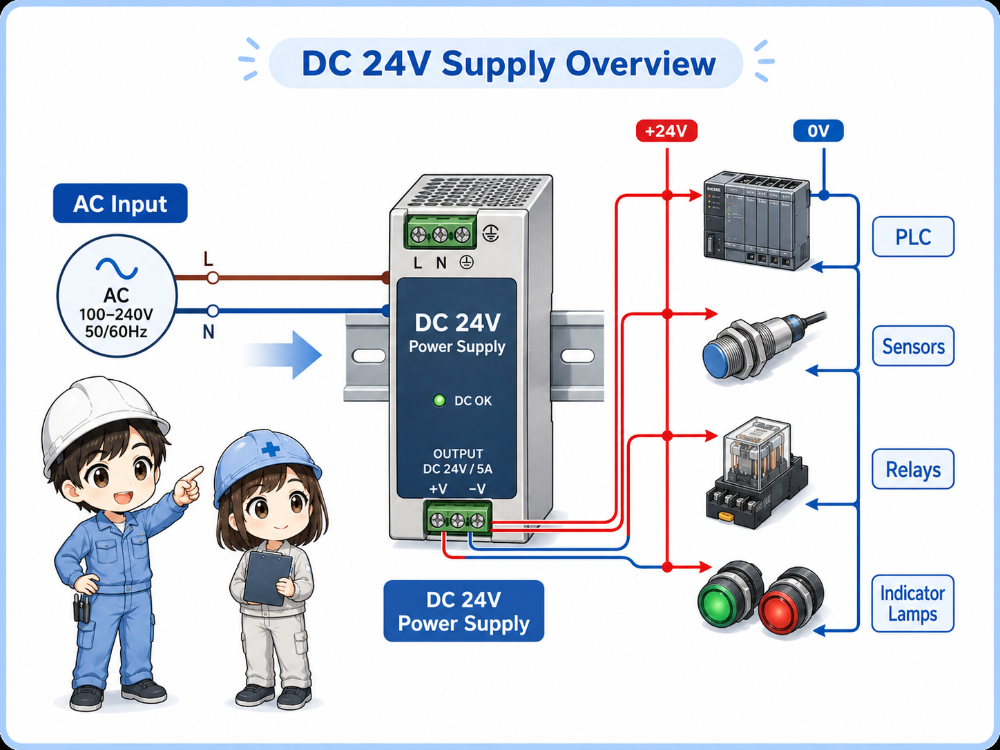
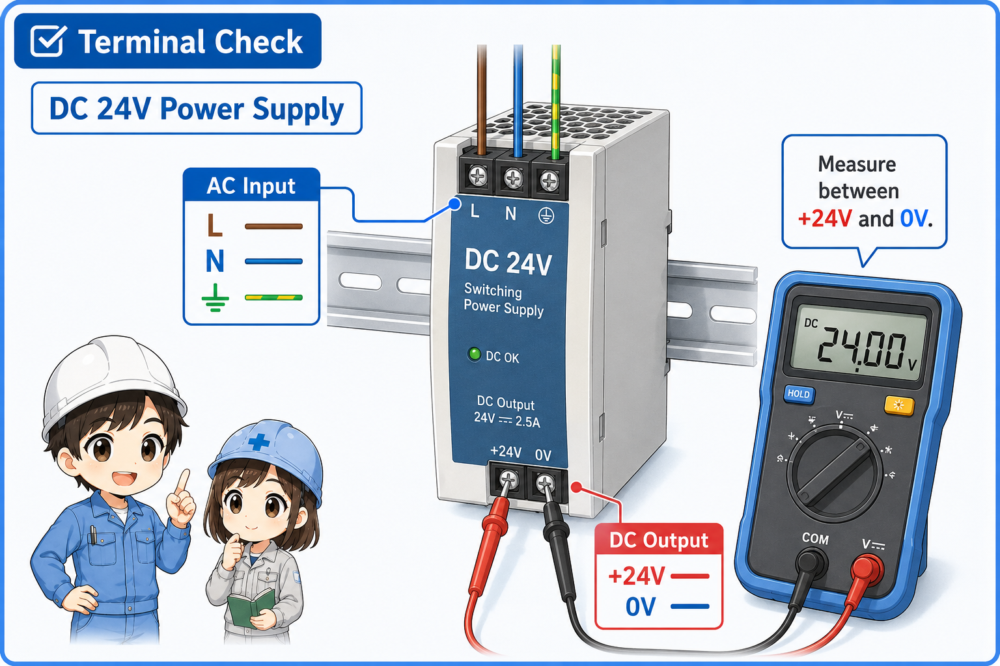
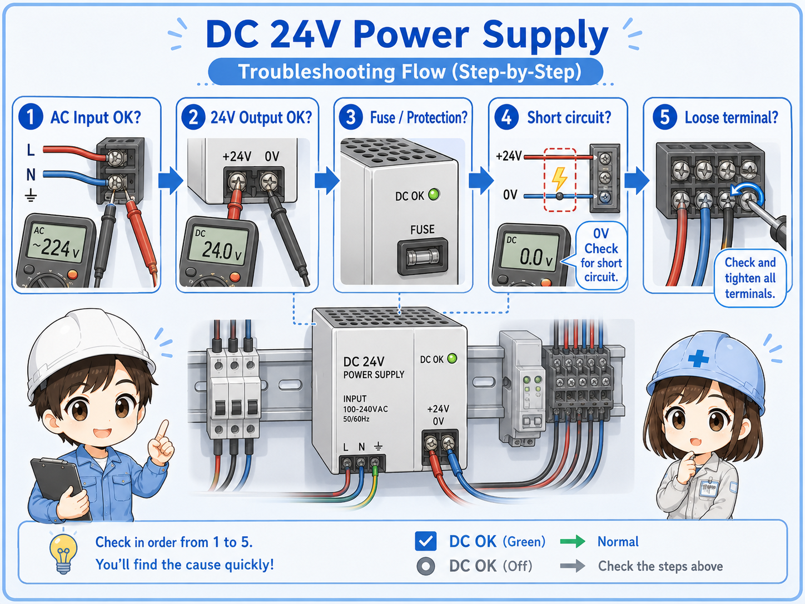

What is a DC 24V power supply?
In a control panel, a DC 24V power supply is the device that creates the low-voltage control power used by PLCs, sensors, relays, and indicator lamps.
Many control panels receive AC power, such as AC100V, AC200V, or another input voltage depending on the machine and region. A DC 24V power supply converts that input into 24V DC so control devices can operate in a stable and practical way.
In the field, people may simply call it a power supply, 24V power supply, switching power supply, or DC power supply. The exact name may differ, but the basic role is the same: supply 24V DC to the control side of the machine.

The key point
A power supply is not just a box that “has electricity.” It is the source of the control voltage that many devices depend on. If 24V DC is missing, many signals and outputs may stop working at the same time.
Why control panels often use 24V DC
DC 24V is widely used because it works well with PLC inputs, sensors, relays, solenoid valves, and indicator lamps.
In many control systems, 24V DC is easier to handle than using the main power voltage directly for every control signal. It is commonly used for input signals, sensor power, relay coils, lamp circuits, and small control loads.
This does not mean 24V DC is always safe to treat casually. It is still electrical energy, and short circuits or wiring mistakes can damage components. But as a control voltage, it is practical and widely supported by industrial devices.
PLC inputs
Many PLC input modules are designed to receive 24V DC signals from pushbuttons, sensors, and switches.
Sensors
Photoelectric sensors, proximity sensors, and pressure switches often use 24V DC as their operating power.
Relays and lamps
Relay coils and indicator lamps can be powered from the same 24V DC control supply when designed that way.
Fault influence
If the 24V supply fails, many devices may appear to fail at once even though the devices themselves are normal.

When several sensors and inputs stop working at the same time, do not check each sensor first. Check whether the 24V power supply is healthy.

So one bad 24V supply can make it look like many devices failed together?
Exactly. That is why checking +24V and 0V early can save a lot of time.
Basic terminals: AC input, +V, 0V, and FG
Before measuring or troubleshooting, separate the input side and the output side of the power supply.
A typical control panel power supply has an AC input side and a DC output side. The labels vary by manufacturer, but the basic meaning is often similar.
| Terminal label | Typical meaning | Beginner-friendly explanation |
|---|---|---|
| L / N or AC input | AC input power | This is the input side of the power supply. It receives AC power from the panel’s power circuit. |
| +V / +24V | Positive DC output | This is the positive side of the 24V DC output used by control devices. |
| 0V / -V / COM | DC common side | This is the return side for the 24V DC circuit. Many beginner checks fail because 0V is ignored. |
| FG / PE | Frame ground or protective earth connection | This is related to grounding. Follow the actual panel drawing and manufacturer instructions. |

Measure between +24V and 0V
To confirm the DC output, measure between the +24V terminal and the 0V terminal. Measuring only one point without a proper reference can lead to confusing results.
What devices use the 24V DC supply?
In a control panel, the 24V DC supply is often shared by many control devices.
The exact wiring depends on the machine, but 24V DC is commonly distributed to PLC input circuits, sensors, relay coils, solenoid valves, lamps, signal towers, and other small control devices.
- PLC inputs
- Sensors
- Relays
- Indicator lamps
- Signal towers
- Solenoid valves
1. AC input
The panel supplies AC input power to the power supply.
2. 24V output
The power supply creates stable 24V DC output.
3. Distribution
+24V and 0V are distributed through terminals and wiring.
4. Devices operate
PLCs, sensors, relays, and lamps use the 24V DC power.
Field-friendly way to think
If many 24V devices stop together, the problem may be upstream: power supply, fuse, terminal block, common 0V, or a short circuit on the 24V line.
Capacity and voltage drop: why the supply can be overloaded
A power supply has a rated output current. If the connected load is too large, the voltage may drop or the supply may shut down.
A DC 24V power supply is not unlimited. It has a rated output capacity, such as a current rating in amperes. If the total load current is too high, the output voltage may become unstable, the supply may enter protection mode, or connected devices may behave strangely.
Long wiring, loose terminals, poor common wiring, and short circuits can also cause voltage drop or unstable operation. This is why checking only the power supply body is not always enough.
Rated current
Check whether the total load current is within the power supply’s rated output current.
Short circuit
A short on the 24V line may pull the voltage down or trigger protection.
Loose terminal
A loose +24V or 0V terminal can cause intermittent power loss that looks like a device fault.
Voltage drop
Measure the voltage at the device side too, especially when the cable is long or the load is large.
Do not increase capacity casually
Replacing a power supply with a larger one may not solve the real problem if there is a short circuit, wiring fault, or design issue. Always identify the cause before changing components.
What to check when 24V DC is missing or unstable
When 24V DC is missing, check in order: input power, output voltage, protection, wiring, and connected loads.
Troubleshooting becomes easier when you divide the circuit into input side, power supply body, output terminals, distribution wiring, and connected devices.

1. Is AC input present?
If input power is missing, the power supply cannot create 24V DC output.
2. Is 24V present at +V and 0V?
Measure the output directly between +V and 0V. Confirm the meter is set correctly for DC voltage.
3. Is the output overloaded?
Disconnecting loads for investigation may be needed, but only under proper site rules and safe conditions.
4. Is there a short or loose wire?
A short circuit, damaged cable, or loose terminal can make the 24V line drop or flicker.
Common beginner mistake
Do not check only the +24V side. Many control problems are caused by missing 0V, loose common wiring, or measuring from the wrong reference point.
Practical safety notes
A 24V DC control circuit is easier to handle than high-voltage power wiring, but it still needs careful work.
The input side of the power supply may be connected to AC voltage. The output side may be 24V DC, but short circuits can still damage devices, burn wiring, or stop a machine unexpectedly.
Before measuring or replacing a power supply, check the actual panel drawing, site rules, and lockout or isolation procedure. When working inside a live control panel, follow the rules of your workplace and only perform work you are qualified to do.
Do not treat 24V as “no risk”
24V DC is commonly used for control signals, but incorrect work can still cause equipment damage or unsafe machine behavior. Always verify the circuit safely.